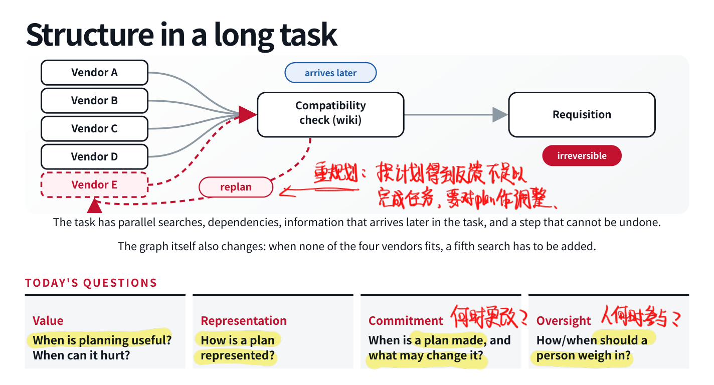
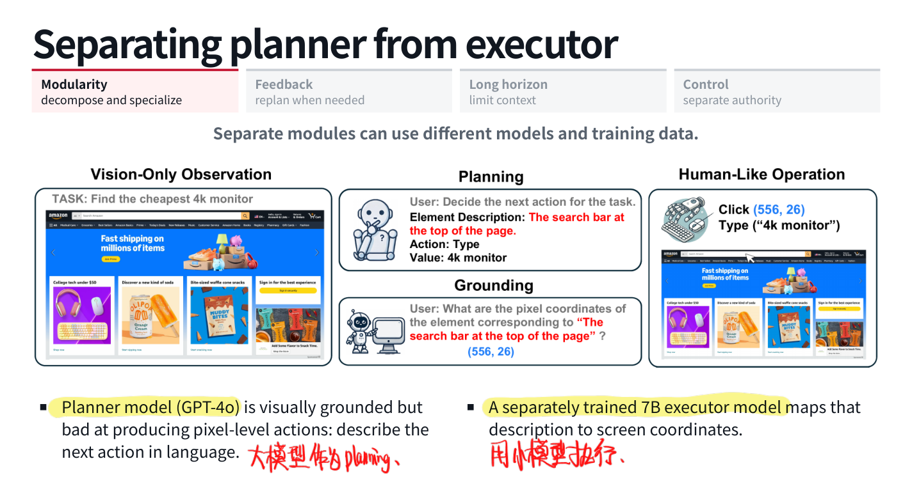
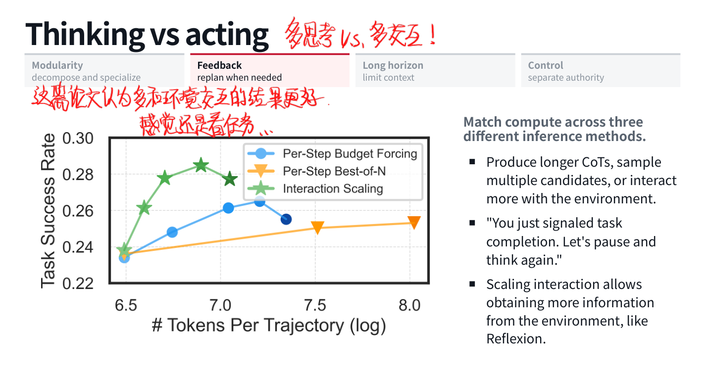
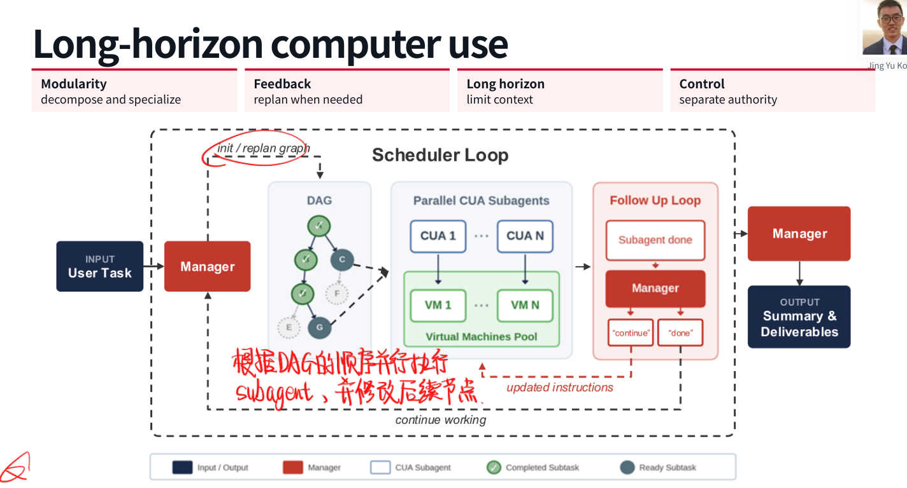
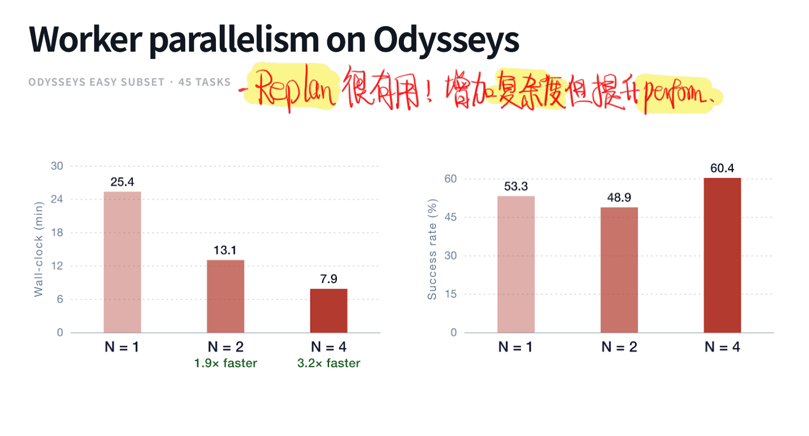
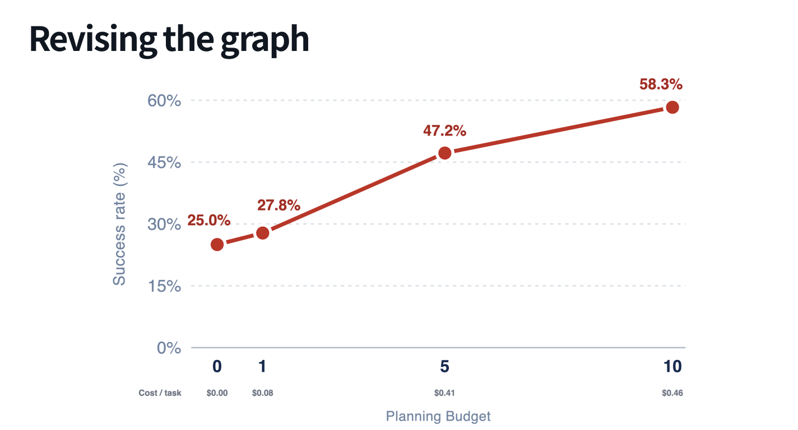

「先写计划再执行」听上去总没什么坏处，尤其是看 Agent 一口气改了一堆文件以后。可计划本身也可能错，任务又会在执行中暴露新信息。到底要提前决定多少、什么时候允许推翻、谁负责检查，这一讲比「让模型列个 Todo」复杂得多。
5.1 一个采购任务为什么会失控？
假设让 Agent 给实验室买 GPU 工作站：比较几家供应商、查内部 wiki 的兼容要求，最后提交采购申请。朴素 ReAct Agent 可能逐个网站浏览，直到第几十步才发现机架与供电限制；长上下文压缩以后，它记得只有供应商 D 合适，但 D 交期长达 20 周，于是纠结一会儿，还是提交了。
这里的问题并不只是某一步判断差。供应商搜索可以并行，兼容性检查依赖内部要求，交期可能迫使任务新增第五家供应商，而提交申请是有后果的动作。任务具有结构，而且结构还会变化。 把它全部塞进一条越来越长的对话，当然也能跑，只是很容易把不同层面的决策混在一起。
Plan 可以定义为对未来动作或子目标、以及顺序和依赖关系的显式表示。它针对当前任务；Skill 则提供跨任务方法。计划是提议，执行过程中仍需要验证前提。

Plan Mode 常把只读调查、澄清问题、写计划、人审核与执行组织起来。不过效果来自哪里要分开：额外推理算力、更充分的上下文、持久化产物、任务分解和人工纠偏，都可能贡献收益。看到 Plan Mode 更好，不能直接把所有功劳归给「先输出一张列表」。
5.2 从 CoT 到显式分解
CoT 已经包含某种规划：中间文本提供 scratchpad，后面的预测可以参考前面的思路；Plan-and-Solve 又进一步要求先理解问题、提出计划，再解题。但计划和答案可能仍在一次生成里，没有任何独立模块检查计划。
Least-to-Most 把过程拆成两阶段：先生成子问题，再按顺序求解，把先前结果传给后面的步骤。例如先算一次上下滑梯需几分钟，再算开放时间内能完成几次。复杂问题不好直接解，子问题却可能很好解，每次处理需要的上下文也更小。
Decomposed Prompting 再把子任务路由给专门 handler，例如简单 QA、关系查询、列表遍历等。各模块可以独立提供示例或训练，这才是 decomposition 带来的模块化收益。Recursive Language Models 等思路又允许对子上下文或子任务递归调用，而不要求所有工作在同一窗口展开。
不过拆分会产生接口问题：子问题有没有覆盖原目标？答案传递是否丢失条件？前一步错了，后一步能否发现？把一道错题拆成五道互相依赖的错题，并没有多赚四次成功）
5.3 推理和现实动作的区别
文本推理主要改变生成内容，写错了还可以继续改写；外部动作则改变下一轮环境，可能揭示未知信息、执行失败，也可能不能轻易撤销。例如发送邮件、提交申请，不是后面再补一句「我刚才没发」就能撤回。
经典规划对此有比较明确的表示：状态由谓词描述，动作有前置条件与效果。拿积木世界来说，pick-up(x) 要求积木在桌上、上方空闲、手是空的；执行后变成手持该积木，并修改相关谓词。寻找一个始终满足前置条件、最后到达目标的动作序列，就是规划搜索。
这让我想起以前写 BFS / DFS，给状态和转移找一条合法路径，本来也可以看成规划。LLM 的变化在于很多世界知识与动作效果都隐含在参数里，生成一个流畅计划变容易了，确认它对世界的假设却变难了。因此观察、适用性检查、执行验证和恢复都很重要。
计划的表示也有取舍：形式化计划便于在已建模范围内校验，自然语言更通用，程序介于两者之间。Code as Policies、ProgPrompt、Binder 等路线让代码调用感知与控制 API，利用程序结构组织动作。程序可运行、可检查，但仍受接口覆盖与控制流限制；调用的感知模型本身也可能错。
5.4 提前承诺多少？
可以把执行方式放在一条连续线上：开发者规定固定 workflow；模型先生成计划，再承诺执行；模型在执行时根据反馈动态修改。对应的是不同程度的决策开放。
固定流程便宜、可预测，特别适合步骤稳定的任务；先规划后执行让模型选择这次的路线，但执行阶段仍较固定；动态 replanning 则能在四家供应商都不合适时新增搜索。只有反馈值得改变下一步时，重规划的开销才有理由。
LLM-Planner、Inner Monologue、SwiftSage 等工作把环境反馈带回高层决策。比如原来打算找土豆，实际只看见冰箱，就应修改搜索路径；目标容器没找到，可能要继续观察或重新选择动作，而不是闭眼按初版步骤完成。
5.5 Planner / Executor 分离有什么实际价值？
我更认可能力上的分离，而不是先给几个模型起职业名字。比如视觉模型能理解「点击上方搜索框」，却不擅长输出精确像素坐标；UGround 一类 executor 就可以用单独训练的较小模型把语言动作落到坐标上。Planner 与 Executor 的数据、模型和优化目标各有侧重。
Plan-and-Act 的一条训练路径是让教师对成功轨迹分段、标注高层计划，再分别训练 planner 与 executor。这样抽象层次也进入了监督数据，而不完全依靠推理时临场分工。

固定「架构师—开发者—测试员」角色却可能有反作用。测试员如果不能自己定位代码，只能等开发者发摘要，就缺少验证答案的能力；交接报告又可能丢掉上下文。单 Agent 可以在同一任务中灵活切换定位、编辑与验证，未必比固定角色差。多 Agent 的收益要对应到具体瓶颈。
5.6 计划可行吗？Affordance 与信息获取
SayCan 提醒我区分语言上的合理与物理上的可执行：LLM 可能觉得某个技能适合当前目标，但机器人未必有条件完成。它结合语言相关性与技能 value / affordance，后者估计当前状态下技能成功的可能性。示意为：
语言先验与可行性一起决定选择。value 也需要学习、校准，乘起来并不会消除所有误差，但至少显式地问了一次「这事现在干得成吗」。
另一个选择是把计算花在想、采样还是交互上。Test-Time Interaction 在匹配预算下比较更长 CoT、更多候选与更多环境交互；某些任务中，新增观察比继续在已有信息上推理更有效。这里我比较认同：缺证据时多想并不会凭空长出证据。

例如文件格式由分隔符、引号、是否有表头三个因素决定，共有 12 种组合，文件名只提供有限线索。与其反复根据名字推测，不如检查文件或运行低成本解析测试。Calibrate-then-Act 把格式可能性的估计加入上下文，帮助模型依据置信度决定是否先验证。需要的是对不确定性作出合适动作，而不是把「我不确定」写得更长。
Overthinking 也不只表现为推理长，还包括 analysis paralysis、无关动作链和过早放弃。相关实验发现 overthinking score 与 issue resolution 负相关；这不表示长度单独导致失败，但足以提醒我们，推理预算应该带来有价值的决策或观察。
5.7 长任务里的 Self-conditioning
Vending-Bench 让 Agent 经营自动售货机，涉及定价、订货和补货，最长跨数千条消息与数百个模拟日。有个失败链非常典型：把「今天应到货」当成「已经到货」，补货失败后推断生意已经终止，后续又把日常费用理解成欺诈，始终没有等确认邮件或重新检查。
一次临时误判变成后续所有行动的前提，这就是 self-conditioning 的危险。模型不只会被外部错误信息影响，也会相信自己之前写下的话。
若各步独立成功率近似为 ，连续 步全对的概率是 ，提高单步准确率可以大幅延伸有效执行长度。但真实轨迹里，前面错误会改变后面输入，后续成功率可能继续下降。部分实验中更大模型可以执行更长任务，同时也显示出更强的错误自条件化；模型变大没有自动消灭这个问题。
规划、上下文隔离与定期重新核对证据都可能帮助，但光保留一个计划文件也不够。文件里如果写的就是错误状态，Agent 只是有组织地继续错下去。
5.8 动态、递归地委派
委派本身可以被看成 action。RAO 一类方法让 Agent 调用 launch_subagent(goal)，子 Agent 又可继续委派，各节点按自身任务结果及子任务完成情况评分。训练时不必人工固定整棵任务树，模型可以学习什么时候需要进一步分解；在中等任务上训练后，也可能在更难任务中形成更深结构。
这种递归有助于限制各节点上下文，但还需要控制重复工作、深度、总预算与结果检查。ADaPT 等自适应分解与递归执行思路，都在讨论何时把失败或困难子任务继续拆开。
分解以后也有一类东西不能拆散：全局约束。TravelPlanner 可以把交通、酒店、餐饮与景点分开查，可总预算、时间衔接与饮食限制跨越所有子任务。需要一个地方持续维护这些条件，并检查组合结果。每块单独正确，不代表拼起来能用。
5.9 计划作为控制与安全边界
Plan Mode 的人工审核不仅能改步骤，也能明确权限。例如采购前先审查配置和金额，再允许提交，而不是让浏览页面里的任意文本都参与决定付款。
ReAct 每轮读到新网页后，都可能据此改变下一步动作，恶意内容因此有机会变成指令。受限程序可以把网页内容当数据值使用，而不接受它提出的新动作。这提供了一种边界，但前提是允许的动作、输入处理和执行器真的被限制；生成了程序并不天然免疫 prompt injection。
更一般地说，需要区分规划者掌握的信息与执行者拥有的权限，明确谁能修改计划、哪些动作需要检查，以及不可逆操作前由谁负责批准。
5.10 MACU：把结构落实到 Computer Use
Odysseys 中一个长任务是查找纽约的 ACL 手术医生并整理电子表格。仅仅搜到名字远远不够：要验证官方 profile 中的手术专长，收集医院、科室、链接，保留对应标签页，最后形成恰好 10 位医生的表格及机构汇总。不同 rubric 分散在不同应用与步骤里，正好暴露长任务里的证据保存和验收问题。
MACU 用 Manager 维护子任务 DAG，scheduler 执行已满足依赖的节点，把工作分给 Computer Use workers 与独立虚拟机。Worker 完成后，Manager 可以要求继续、确认完成或修改图，再调度下一批。核心不是并排摆多个模型，而是 按依赖执行、检查结果、根据反馈修改图。

几个实验细节值得留下：
| 任务集 | 单 Agent 成功率 | MACU 成功率 |
|---|---|---|
| OSWorld | 43.8% | 48.5% |
| Online-M2W | 52.2% | 55.6% |
| WebTailBench | 20.8% | 29.5% |
| Odysseys | 8.5% | 34.0% |
在 36 个 OSWorld 任务的消融中，固定较弱 worker 时，不同 Manager 带来的成功率不同；较强 Manager 的协调价值很明显。固定 Manager 再换 worker，较弱 worker 往往获得较大提升，但并非严格单调。一个 4B worker 的单 Agent 结果为 25.0%，组合后达到 58.3%，说明部分工作确实可以由管理层补足。
并行实验则更直接：45 个 Odysseys easy tasks 上，worker 数从 1、2 到 4，耗时约 25.4、13.1、7.9 分钟；成功率为 53.3%、48.9%、60.4%。速度改善清楚，质量并不是每加一个 worker 都上涨。另一个 planning budget 消融从 0 增至 10，成功率由 25.0% 升至 58.3%，同时成本增加。replan 有用，但也要付账。


这一讲留下的开放问题还是挺实在的：自然语言计划如何校验；模型怎样校准该思考、观察、提问还是重规划；跨子任务状态怎样维护；以及外部 scaffolding 的哪些部分最终会被模型训练吸收。现在先不用急着给所有任务都上多 Agent，能说明白分解解决了哪个问题，就已经比纯堆角色强不少了。